8. 循环神经网络（随着时间的推移，反复看，兴许就能看懂了，先尽量理解吧）
到目前为止，我们遇到过两种类型的数据：表格数据和图像数据。 对于图像数据，我们设计了专门的卷积神经网络架构来为这类特殊的数据结构建模。 换句话说，如果我们拥有一张图像，我们需要有效地利用其像素位置， 假若我们对图像中的像素位置进行重排，就会对图像中内容的推断造成极大的困难。
最重要的是，到目前为止我们默认数据都来自于某种分布， 并且所有样本都是独立同分布的 （independently and identically distributed，i.i.d.）。 然而，大多数的数据并非如此。 例如，文章中的单词是按顺序写的，如果顺序被随机地重排，就很难理解文章原始的意思。 同样，视频中的图像帧、对话中的音频信号以及网站上的浏览行为都是有顺序的。 因此，针对此类数据而设计特定模型，可能效果会更好。
简言之，如果说卷积神经网络可以有效地处理空间信息， 那么本章的循环神经网络（recurrent neural network，RNN）则可以更好地处理序列信息。 循环神经网络通过引入状态变量存储过去的信息和当前的输入，从而可以确定当前的输出。
许多使用循环网络的例子都是基于文本数据的，因此我们将在本章中重点介绍语言模型。
8.1. 序列模型/序列数据
8.1.1. 统计工具
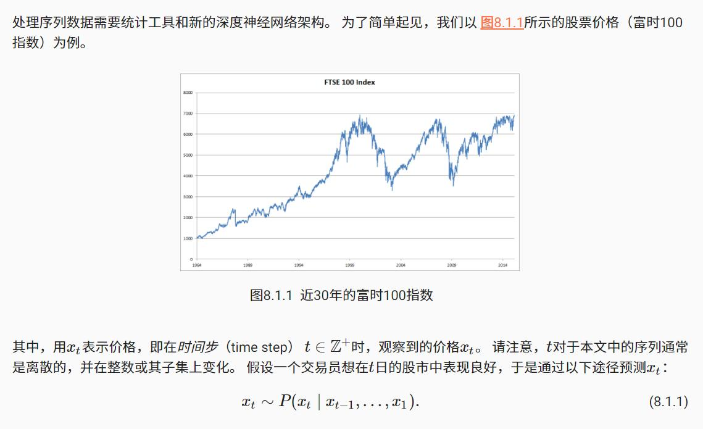
8.1.1.1. 自回归模型
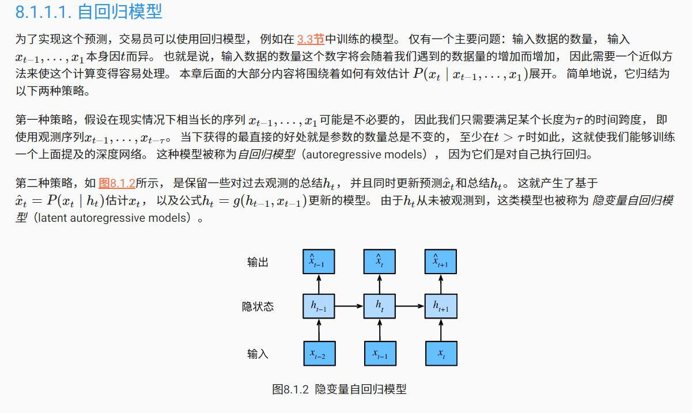
8.1.1.2. 马尔可夫模型(需要了解基本概念)
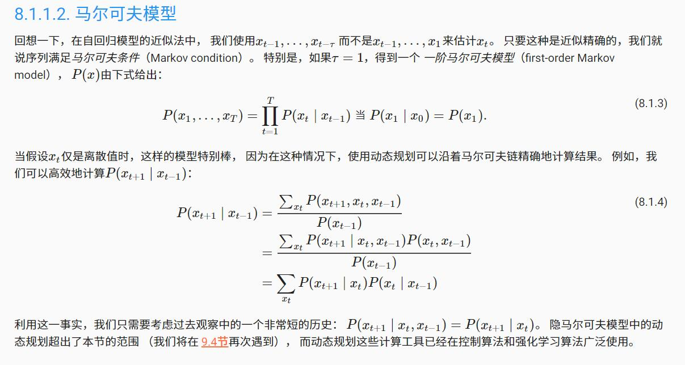
8.1.1.3. 因果关系
8.1.4. 小结
- 内插法（在现有观测值之间进行估计）和外推法（对超出已知观测范围进行预测）在实践的难度上差别很大。因此，对于你所拥有的序列数据，在训练时始终要尊重其时间顺序，即最好不要基于未来的数据进行训练。
- 序列模型的估计需要专门的统计工具，两种较流行的选择是自回归模型和隐变量自回归模型。
思考：自回归、自监督两个概念好像有相通的地方，都是不需要专门的监督标签，依赖序列中的下一个元素作为标签。
处理序列数据，需要专门的统计工具，自回归模型，隐变量自回归模型，马尔可夫模型等等，那是不是这样，循环神经网络其实是基于隐变量自回归模型的深层模型，循环神经网络其实是处理序列数据的统计工具。
- 对于时间是向前推进的因果模型，正向估计通常比反向估计更容易。
- 对于直到时间步t的观测序列，其在时间步t+k的预测输出是“k步预测”。随着我们对预测时间k值的增加，会造成误差的快速累积和预测质量的极速下降。
8.2. 文本预处理
一篇文章可以被简单地看作是一串单词序列，甚至是一串字符序列。 本节中，我们将解析文本的常见预处理步骤。 这些步骤通常包括：
- 将文本作为字符串加载到内存中。
- 将字符串拆分为词元（如单词和字符）。
- 建立一个词表，将拆分的词元映射到数字索引。
- 将文本转换为数字索引序列，方便模型操作。
小结
- 文本是序列数据的一种最常见的形式之一。
- 为了对文本进行预处理，我们通常将文本拆分为词元，构建词表将词元字符串映射为数字索引，并将文本数据转换为词元索引以供模型操作。
8.3. 语言模型和数据集
假设长度为T的文本序列中的词元依次为x1,x2,…,xT。 于是，xt（1≤t≤T） 可以被认为是文本序列在时间步t处的观测或标签。 在给定这样的文本序列时，语言模型（language model）的目标是估计序列的联合概率
P(x1,x2,…,xT). (8.3.1)
例如，只需要一次抽取一个词元xt∼P(xt∣xt−1,…,x1)， 一个理想的语言模型就能够基于模型本身生成自然文本。
——————————————————————————————————
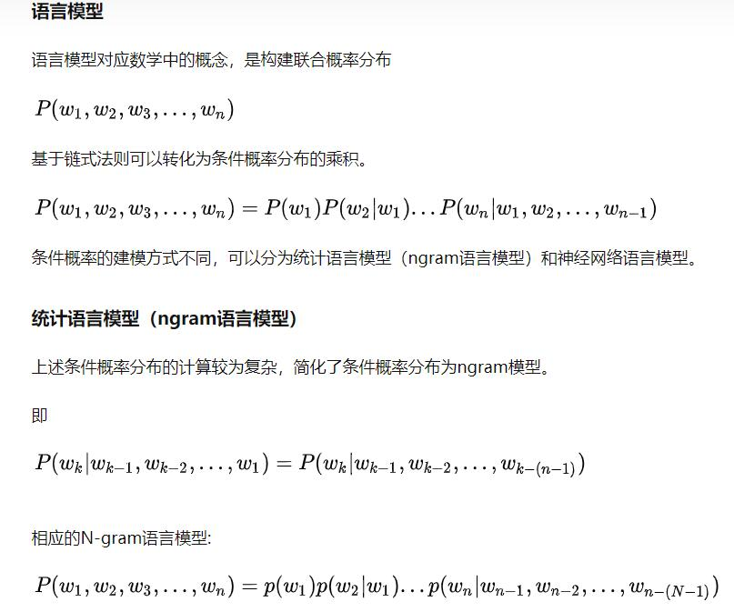
结合前面似然估计的博客来理解， 语言模型就是为语句的联合概率函数进行建模，希望模型对有意义的语句赋予较大的概率，对没意义的语句赋予较小的概率；
概率函数本质上就是一个函数，比如正态分布函数。
训练语言模型，就是用语料库（相当于似然估计中的观测点）去寻找观测点所隶属的概率分布（即似然）。其目的在于寻找一个最符合当前语料库的概率分布（语言模型）。
为什么要计算单词的概率，以及给定前面几个单词后出现某个单词条件概率？
大概是因为，这个概率值就是数据集，用来训练神经网络。
神经网络学到的内容就是预测单词概率，这样的神经网络就是一种语言模型的实现方式。
——————————————————————————————————
8.3.1. 学习语言模型
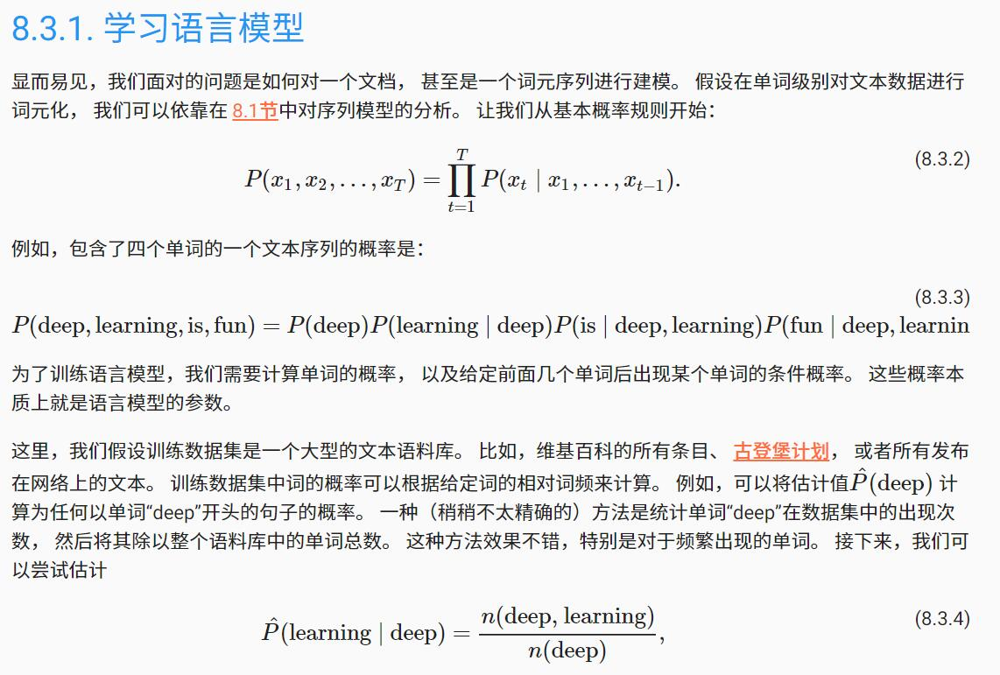
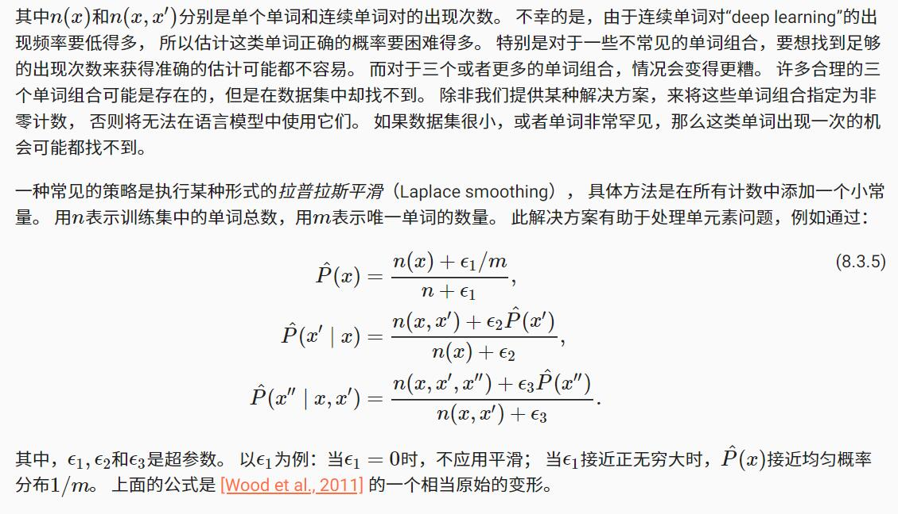
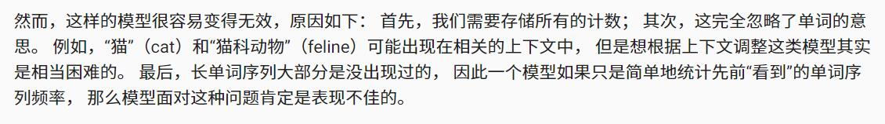
——————————————————————————————————————————————
条件概率用 连续单词对的出现次数和单个单词出现次数之比 来计算是有道理的，直观理解就是，所有单个单词出现的地方 ，计算按该单个单词的下一个单词是不是就是连续单词对中对应的下一个单词（条件概率的含义，在已知单词的前提下，下一个单词是对应单词的概率）。这样的词频之比作为概率计算有一点道理，但并不完美。
—————————————————————————————————————————
语言模型分为统计模型和神经网络模型？
统计模型如n-gram模型，马尔可夫模型，是根据词频之类的数据来计算概率，神经网络语言模型就是所谓的循环神经网络那一套东西？
—————————————————————————————————————————
8.3.2. 马尔可夫模型与n元语法
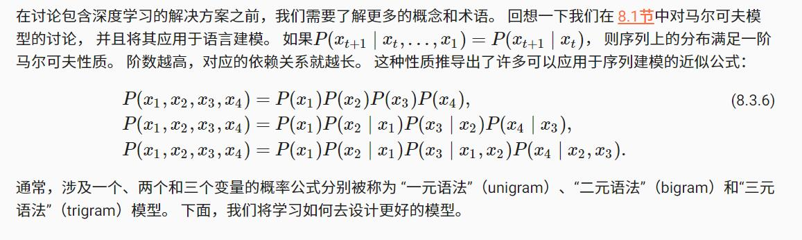
————————————————————————————————————
是不是这样的，其实，n-gram模型基于的原理就是马尔可夫模型原理？
————————————————————————————————————
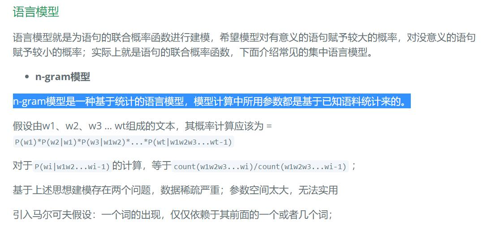
n-gram模型基于统计原理，只要语料库确定了，模型就确定了， n-gram语言模型参数即是条件概率的估算。
直接用语料库计算各个gram的条件概率，相乘作为句子的联合概率。
https://zhuanlan.zhihu.com/p/32829048
————————————————————————————————————
8.3.4. 读取长序列数据
由于序列数据本质上是连续的，因此我们在处理数据时需要解决这个问题。 在 8.1节中我们以一种相当特别的方式做到了这一点： 当序列变得太长而不能被模型一次性全部处理时， 我们可能希望拆分这样的序列方便模型读取。
在介绍该模型之前，我们看一下总体策略。 假设我们将使用神经网络来训练语言模型， 模型中的网络一次处理具有预定义长度 （例如n个时间步）的一个小批量序列。
8.3.5. 小结
- 语言模型是自然语言处理的关键。
- n元语法通过截断相关性，为处理长序列提供了一种实用的模型。
- 长序列存在一个问题：它们很少出现或者从不出现。
- 齐普夫定律支配着单词的分布，这个分布不仅适用于一元语法，还适用于其他n元语法。
- 通过拉普拉斯平滑法可以有效地处理结构丰富而频率不足的低频词词组。
- 读取长序列的主要方式是随机采样和顺序分区。在迭代过程中，后者可以保证来自两个相邻的小批量中的子序列在原始序列上也是相邻的。
8.4. 循环神经网络
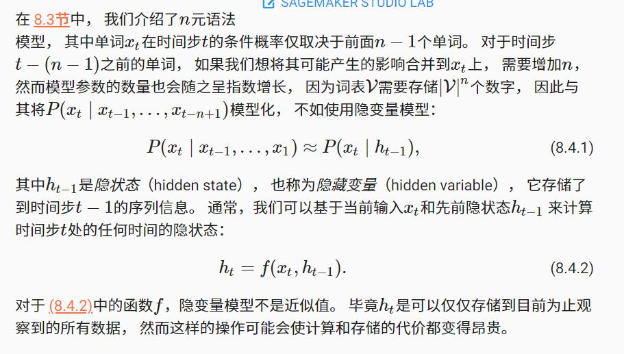
循环神经网络（recurrent neural networks，RNNs） 是具有隐状态的神经网络。
8.4.1. 无隐状态的神经网络
8.4.2. 有隐状态的循环神经网络
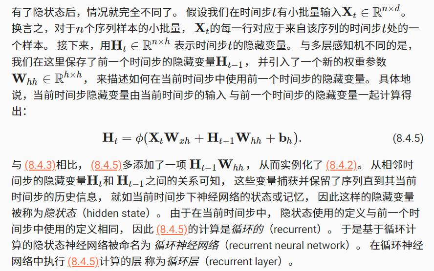
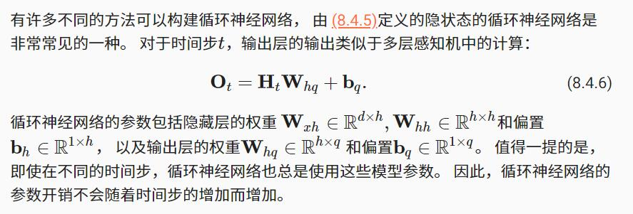
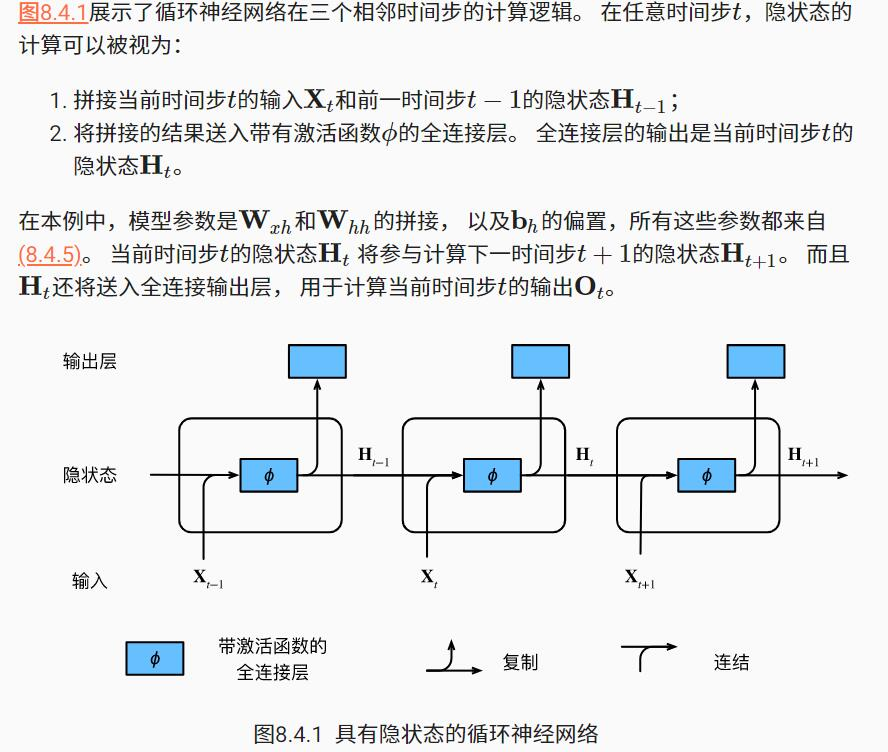
8.4.3. 基于循环神经网络的字符级语言模型
回想一下 8.3节中的语言模型， 我们的目标是根据过去的和当前的词元预测下一个词元， 因此我们将原始序列移位一个词元作为标签。 Bengio等人首先提出使用神经网络进行语言建模 [Bengio et al., 2003]。 接下来，我们看一下如何使用循环神经网络来构建语言模型。
——————————————————————————————————
小思考：前面了解到语言模型是概率模型，当时困惑，联合概率函数到底是如何实例化的，现在看来，类比于正太分布的概率密度函数，循环神经网络就是用全连接层这样的函数形式来构造语言模型的概率密度函数，该神经网络学到的内容就是概率，网络输出可能就是某个词元在0到1之内的概率值。所谓条件概率，应该来源于语言模型的构造方式，是基于固定长度序列来预测下一个词元。
——————————————————————————————————
设小批量大小为1，批量中的那个文本序列为“machine”。 为了简化后续部分的训练，我们考虑使用 字符级语言模型（character-level language model）， 将文本词元化为字符而不是单词。 图8.4.2演示了 如何通过基于字符级语言建模的循环神经网络， 使用当前的和先前的字符预测下一个字符。
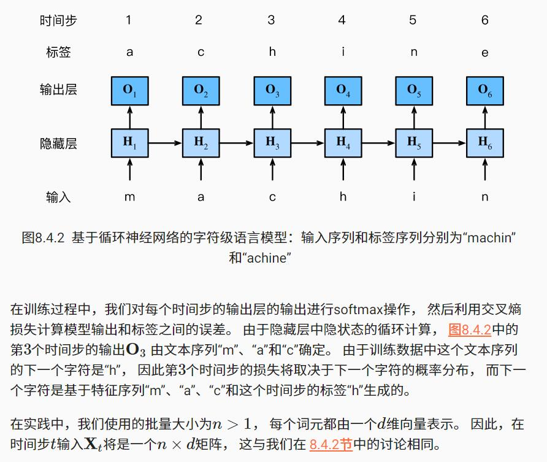
8.4.4. 困惑度（Perplexity）
最后，让我们讨论如何度量语言模型的质量， 这将在后续部分中用于评估基于循环神经网络的模型。 一个好的语言模型能够用高度准确的词元来预测我们接下来会看到什么。
考虑一下由不同的语言模型给出的对“It is raining …”（“…下雨了”）的续写：
- “It is raining outside”（外面下雨了）
- “It is raining banana tree”（香蕉树下雨了）
- “It is raining piouw;kcj pwepoiut”（piouw;kcj pwepoiut下雨了）
就质量而言，例1显然是最合乎情理、在逻辑上最连贯的。 虽然这个模型可能没有很准确地反映出后续词的语义， 比如，“It is raining in San Francisco”（旧金山下雨了） 和“It is raining in winter”（冬天下雨了） 可能才是更完美的合理扩展， 但该模型已经能够捕捉到跟在后面的是哪类单词。 例2则要糟糕得多，因为其产生了一个无意义的续写。 尽管如此，至少该模型已经学会了如何拼写单词， 以及单词之间的某种程度的相关性(香蕉和树之间存在相关性，都是植物)。 最后，例3表明了训练不足的模型是无法正确地拟合数据的。
困惑度的最好的理解是“下一个词元的实际选择数的调和平均数”。 我们看看一些案例：
- 在最好的情况下，模型总是完美地估计标签词元的概率为1。 在这种情况下，模型的困惑度为1。
- 在最坏的情况下，模型总是预测标签词元的概率为0。 在这种情况下，困惑度是正无穷大。
- 在基线上，该模型的预测是词表的所有可用词元上的均匀分布。 在这种情况下，困惑度等于词表中唯一词元的数量。 事实上，如果我们在没有任何压缩的情况下存储序列， 这将是我们能做的最好的编码方式。 因此，这种方式提供了一个重要的上限， 而任何实际模型都必须超越这个上限。
在接下来的小节中，我们将基于循环神经网络实现字符级语言模型， 并使用困惑度来评估这样的模型。
8.4.5. 小结
- 对隐状态使用循环计算的神经网络称为循环神经网络（RNN）。
- 循环神经网络的隐状态可以捕获直到当前时间步序列的历史信息。
- 循环神经网络模型的参数数量不会随着时间步的增加而增加。
- 我们可以使用循环神经网络创建字符级语言模型。
- 我们可以使用困惑度来评价语言模型的质量。